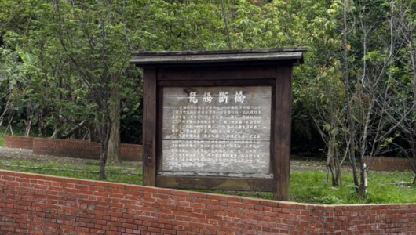

|
 龍騰斷橋 (Longteng Broken Bridge) April 15, 2026 Here are the contents of the sign at the bridge. 龍勝村早期稱為魚藤坪村,位於鯉魚潭與關刀山側 ,相傳先民初墾時鯉魚潭裡的鲤鱼精作怪,因此種植有 喜的魚藤,用意是借附近造型像「三國志」裡關羽所持 之刀, 斬魚藤以喜殺鯉魚精。『關刀斬魚藤,魚藤喜鯉 魚」,一物剋一物的把關刀山、魚藤坪及鯉魚潭串聯了 起來,有舊山線最「毒」的傳說之稱。 龍騰斷橋原名「魚藤坪橋」,因隨著魚藤村更名為 龍騰村,亦改稱龍騰。其原是由薅拱造型的橋墩與大跨 距的鋼樑所構成,特殊的結構與造型被譽為「台灣鐵道 藝術極品」, 但美麗的外表卻抵抗不過一九三五年開刀 山大地震的反覆位移,整座橋身毀損嚴重,而後拆去有 安全之虞的鋼樑,獨留磚拱橋墩屹立於青山翠谷中,成 為舊山線永達的地標。 Longsheng Village was originally known as Yutengping Village, situated alongside Liyu Lake and Mount Guandao. Legend has it that during the early days of settlement, a carp spirit residing in Liyu Lake caused mischief among the villagers. Consequently, they planted "yuteng" (fish poison vines) — a plant to which the carp spirit was said to be averse — with the intention of using the nearby Mount Guandao (whose profile resembles the blade wielded by Guan Yu in "Romance of the Three Kingdoms") to "slash" the vines and thereby slay the spirit. This interplay — "The Guandao slashes the vines; the vines repel the carp" — weaves together Mount Guandao, Yutengping, and Liyu Lake through a narrative of mutual subduing forces, earning it the reputation as the "most venomous" legend of the Old Mountain Line. The Longteng Broken Bridge was originally named "Yutengping Bridge"; however, following the renaming of Yuteng Village to Longteng
Village, the bridge was likewise renamed Longteng. Its original structure consisted of arched piers supporting large-span steel girders;
this unique design and architecture were hailed as a "masterpiece of Taiwanese railway art." Yet, its aesthetic beauty proved no match
for the seismic forces of the 1935 Guandao Mountain Earthquake. The tremors caused repeated structural displacements that severely
damaged the entire bridge body. Subsequently, the steel girders — deemed a safety hazard — were dismantled, leaving only the brick-arched
piers standing tall amidst the lush green hills and valleys, serving as an enduring landmark of the Old Mountain Line.
|